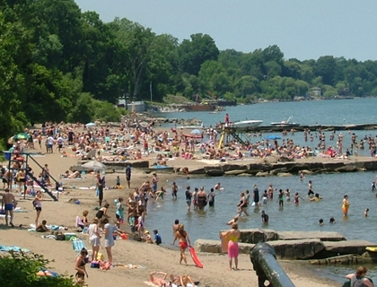

Enhance Great Lakes Beach Recreational Water Quality Decision Making
Template #77

U.S. Geological Survey is developing rapid water quality assessment approaches and decision-making tools that provide timely and accurate information to beach managers and the public on daily swimming conditions and beach health. On-the-ground science is also being conducted to find sources of pollution and environmental factors that may create a situation where unhealthy bacteria or viruses can live and pose a threat to public health.
In collaboration with 23 local and state agencies, beach-specific models were developed at 43 beaches throughout the Great Lakes region, and data were collected at 6 more beaches for future predictive model development. A predictive modeling workshop was hosted by USGS with instructors from USGS, USEPA, and Wisconsin DNR and included training on the use of USGS-developed data aggregation tools and USEPA’s Virtual Beach.
Over 56 beaches across the Great Lakes region, in addition to those currently being monitored, will be included in this effort to help meet goals for healthier beaches.
Analyses were completed for a suite of pathogens at 12 Great Lakes beaches. Although fecal-indicator bacteria concentrations and total pathogen count were significantly greatest at beaches which greatly exceeded any of several recreational water quality criteria, pathogen genes were still detected in waters that met all criteria.
A theoretical model was developed to determine that some of the nightly increase in E. coli concentrations at and embayed beach could be attributed to wave-induced mass transport (the movement of bacteria from intermediate depths to shallow depths).
A web tool was created that allows for easy access to data from numerous agencies collecting data across the Great Lakes region (http://cida.usgs.gov/enddat/)
A USGS Fact Sheet describing completed and ongoing USGS Great Lakes beach research was published and distributed at the Great Lakes Beach Association meeting on Mackinac Island, MI in October 2012.
Comparison of filters for concentrating microbial indicators and pathogens in lake water samples, Francy, D.S., Stelzer, E.A., Brady, A.M.G., Huitger, C., Bushon, R.N., Ip, H.S., Ware, M.W., Villegas, E.N., Gallardo, V., and Lindquist, H.D.A., 2013, Applied Environmental Microbiology 79(4); 1342-1352, http://aem.asm.org/. This journal article describes the results of a study comparing different filtration methods for concentrating microbial indicators and pathogens in natural waters. The automatic ultrafiltration method was shown to have the highest recovery while maintaining low variability for all nine microorganisms tested.
Evaluation of potential sources and transport mechanisms of fecal indicator bacteria to beach water, Murphy Park Beach, Door County, Wisconsin, Juckem, P.F., Corsi, S.R., McDermott, C., Kleinheinz, G., Fogarty, L.R., Haack, S.K., and Johnson, H.E., 2013, U.S.Geological Survey Scientific Investigations Report 2012-5190, 29p., http://pubs.usgs.gov/sir/2012/5190/. This report summarizes a study done to examine the physical sources of fecal-indicator bacteria (FIB) to a beach. The research helps to increase the knowledge base on transport mechanisms effecting FIB concentrations at beaches.
Choices in recreational water quality monitoring: New opportunities and health risk trade-offs, Nevers, M.B., Byappanahalli, M.N., and Whitman R.L., 2013, Environmental Science and Technology: Article ASAP, pubs.acs.org/journal/esthag. This journal article examines the new recreational water quality criteria and how differences in which methods are used to classify the beach water as exceeding the “beach action value” can result in variations in how often a beach is posted with an advisory or closing.
Partial least squares for efficient models of fecal indicator bacteria on Great Lakes beaches, Brooks, W.R., Fienen, M.N., and Corsi, S.R., 2012, Journal of Environmental Management 114(2012): 470-475, www.elsevier.com/locate/jenvman. This journal article introduces the use of partial least squares (PLS) as an alternative method to currently-used multiple linear regression(MLR) methods for developing predictive models at beaches. The PLS method is more automated, and PLS predictive models are shown to work as well as MLR predictive models.
Wave-induced mass transport affects daily Escherichia coli fluctuations in nearshore water, Ge, Z., Whitman, R.L., Nevers, M.B., and Phanikumar, M.S., 2012, Environmental Science and Technology: 46(4): 2204-2211, http://pubs.acs.org/journal/esthag. This journal article describes a theoretical model that was used to determine that some of the nightly increase in E. coli concentrations at an embayed beach could be attributed to wave-induced mass transport (the movement of bacteria from intermediate depths to shallow depths).
Beach monitoring criteria: Reading the fine print, Nevers M.B. and Whitman R.L., 2012, Environmental Science and Technology 45(24): 10315-10321, http://pubs.acs.org/journal/esthag. This journal article examined the current use of a single-sample standard for determining water-quality advisories in comparison to other methods for determining advisories as described in USEPA’s ambient water quality criteria.
Understanding beach health throughout the Great Lakes–Continuing research, U.S. Geological Survey, 2012, U.S. Geological Survey Fact Sheet 2012-3113, 4 p., http://pubs.usgs.gov/fs/2012/3113/
Jim Morris, jrmorris@usgs.gov
614-430-7702